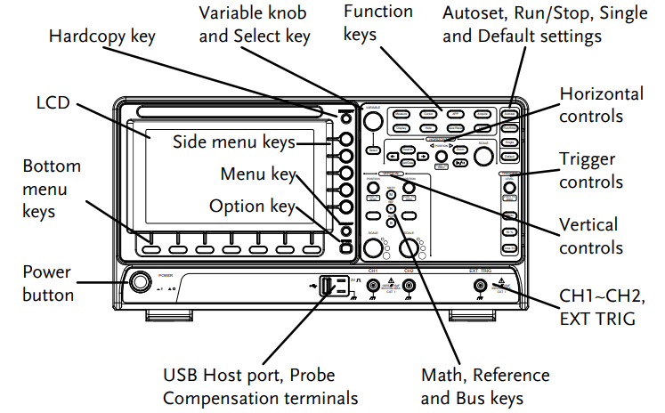

אוסילוסקופ (בעברית: משקף תנודות) הוא המכשיר החשוב והרב-גוני ביותר במעבדת האלקטרוניקה. תפקידו להציג את צורת אות המתח כפונקציה של הזמן על גבי מסך גרפי.
בעוד שרב-מודד דיגיטלי (DMM) מספק לנו רק ערך מספרי יחיד (כמו ערך ממוצע או ערך יעיל RMS), האוסילוסקופ פותח לנו "חלון" לתוך המעגל ומאפשר לראות את האות עצמו בזמן אמת - למדוד זמן מחזור, תדר, מתח שיא לשיא, להבחין ברעשים, עיוותים ותופעות מעבר מהירות (טרנזיינטים).
באיור משמאל מוצג הלוח הקדמי הטיפוסי של אוסילוסקופ דיגיטלי. על גבי המסך מוצגים ערוצי המדידה השונים, ובצד ימין ממוקמים בוררי הרגישות האנכית של כל ערוץ, בסיס הזמן ומערכת הסנכרון (Trigger).

לוח קדמי של אוסילוסקופ דיגיטלי טיפוסי
כדי להתנסות בחיבור פרובים, כיוון כפתורי הרגישות האנכית (Volts/Div) ובסיס הזמן (Time/Div) לפני העבודה המעשית במעבדה, מומלץ להשתמש בסימולטור הבא:
אוסילוסקופ הוא מד-מתח בלבד. הוא אינו מסוגל למדוד זרם באופן ישיר, מכיוון שהתנגדות הכניסה שלו עצומה (\(1\text{ M}\Omega\)) ואינה מאפשרת לזרם המעגל לזרום דרכו.
כדי למדוד זרם משתמשים בחוק אוהם. מחברים נגד קטן בעל ערך ידוע ומדויק (\(R_{sense}\)) בטור לענף שבו רוצים למדוד את הזרם.
בכל ערוץ באוסילוסקופ ניתן לבחור אחד משלושה מצבי צימוד לקביעת אופן העברת האות למגבר המכשיר:
| מצב צימוד | מבנה חשמלי פנימי | הסבר ושימוש מעשי |
|---|---|---|
| DC Coupling | חיבור ישיר של האות למגבר (Direct Connection). | האות מועבר במלואו, כולל רכיב ה-AC (המשתנה) ורכיב ה-DC (הקבוע). זהו המצב הרגיל והנפוץ ביותר במעבדה. |
| AC Coupling | שילוב קבל בטור לגל (High-pass Filter). | הקבל חוסם לחלוטין את רמות המתח הישר (DC Offset) ומאפשר רק לאות המשתנה (AC) לעבור. שימושי מאוד למדידת אדווה או רעש קטן (במילי-וולטים) הרוכב על מתח DC גבוה (לדוגמה, רעש של \(5\text{ mV}\) על ספק כוח של \(12\text{ V}\)). |
| GND (Ground) | ניתוק הכניסה וחיבור המגבר לאדמה פנימית. | האות החיצוני מנותק, ועל המסך מוצג קו אפס וולט ישר. משמש לקביעת מיקום האפס האופקי (Zero Reference Baseline) על רשת המשבצות של המסך. |
בניסוי זה נשתמש באוסילוסקופ כדי למדוד בו-זמנית את מתח המקור של המעגל ואת מפל המתח על פני אחד הרכיבים במחלק מתח טורי, תוך שמירה על כללי בטיחות האדמה המשותפת.